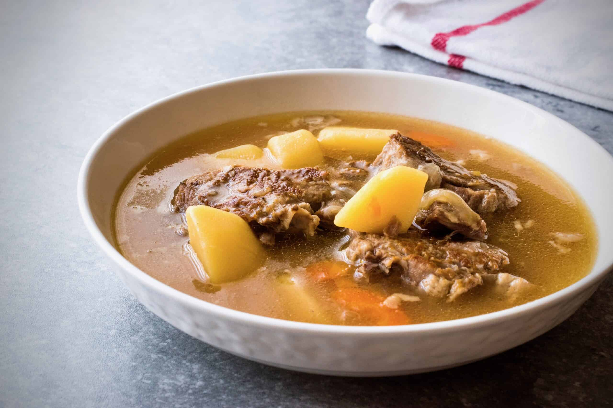

Soup

Description
Soup is a liquid food with a meat, fish, or vegetable stock as a base and often containing pieces of solid food.
Ingredients
- Protein
- Cheese
- Herbs/Spices
- Cream/Milk
- Egg yolks
- Veggies
- Croutons
Steps
- Saute hard vegetables in butter and/or good quality olive oil for 5 – 10 minutes.
- Add stock, bring to a boil and simmer another 5- 10 minutes.
- Add soft vegetables and soft meat and cook another 5 -10 minutes and season to taste.